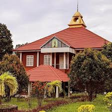
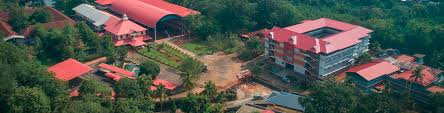

St. George's College Aruvithura is a college under Mahatma Gandhi University, Kottayam. It is located in Aruvithura, Erattupetta, Kottayam District in Kerala, India. It was reaccredited with 'A++' Grade by NAAC for seven years in the fourth cycle.
St. George’s College Aruvithura, is a minority educational institution founded by St. George Forane Church, Aruvithura in 1965. Pioneered under the patronage of His Excellency Mar Sebastian Vayalil, the first Bishop of Pala, and cherished by a host of visionaries and philanthropists like Very Rev. Fr. Thomas Araythinal and Mr T. A. Thomman (Former Minister), the college, right from its inception, embarked on an odyssey towards academic pre-eminence. Very Rev. Fr. Thomas Manakkat, the founding manager and a great visionary, was truly instrumental in laying the foundations for a great beginning and Very Rev. Fr. Jacob Thazhathel, who followed him, was equally adept and insightful in his ideals, guiding the college during the early stages of its growth. For more than two decades, His Excellency Mar Joseph Pallickaparampil, the Bishop of Pala, had been the patron of the college. His Excellency Mar Joseph Kallarangattu is the present patron of this seat of learning.
The library at St. George's College, Aruvithura, has a rich history, having started functioning in 1965. Over the years, it has undergone significant upgrades and expansion to become a first-grade library. In 1978, the post of a first-grade Librarian and a IV-grade librarian were sanctioned, indicating the growing importance of the library as a vital academic resource.
Today, the library has a vast collection of resources to support the academic programs of the college. There are 32,330 books available on various subjects, including literature, science, technology, history, and philosophy. The library also has 58 periodicals, 250 CDs, and access to 8 newspapers, providing students and staff with access to the latest research and developments in their fields of interest.